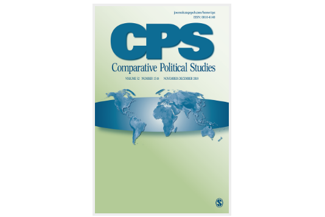

收录于合集
期刊简介： 《比较政治研究》（Comparative Political Studies）是从事跨国和国内比较政治研究的专业杂志，它致力于在前沿方法、理论和实证研究等领域进行深度分析。
编者按： 政观对英文专业期刊摘要的翻译工作主要由团队中的在读硕士生和博士生自愿组织进行，受学生学识及翻译水平所限，译文可能有诸多不当之处，还望读者们见宥，也欢迎留言讨论。此外，由于版权所限，需要阅读原文的读者请通过所在学校/机构的图书馆数据库或其他途径访问下载。

期刊目录
1. External Intervention, Identity, and Civil War
2. The Effect of Election Proximity on Government Responsiveness and Citizens’ Participation: Evidence From English Local Elections
3. What Drives Unequal Policy Responsiveness? Assessing the Role of Informational Asymmetries in Economic Policy-Making
4. Bureaucracy and Growth
5. Countering Violence Against Women by Encouraging Disclosure: A Mass Media Experiment in Rural Uganda
6. The Role of Corporate Political Connections in Commercial Lawsuits: Evidence From Courts
1. 外部干涉、认同和内战
题目： External Intervention, Identity, and Civil War
作者： Nicholas Sambanis，宾夕法尼亚大学政治学教授；Stergios Skaperdas，加尼福利亚大学欧文分校经济学教授；William Wohlforth，达特茅斯学院政府系教授。
摘要： 本文研究了外部干涉如何与族群极化相互作用，从而引发叛乱和内战。以往的文献认为极化是从内部产生的，是民族企业家使人口学特征或群体间差异凸显的结果。作者通过表明极化也受到国际政治的影响来对这些方法进行了补充。他们通过族群认同的途径来建立干涉对内战影响的模型，这一机制在之前的文献中未被发现。在作者的模型中，代表不同群体的本土行动者受到外国赞助者的鼓励，以暴力方式追求其目标。这反过来又使族群认同凸显出来引发极化问题。如果没有干涉的幽灵，极化往往不足以引发战争，反之，在没有极化的情况下，干涉也不足以引发战争。作者以来自乌克兰的案例证据对这一模型进行了说明。
We examine how external intervention interacts with ethnic polarization to induce rebellion and civil war. Previous literature views polarization as internally produced—the result of demographic characteristics or intergroup differences made salient by ethnic entrepreneurs. We complement these approaches by showing that polarization is also affected by international politics. We model intervention’s effect on civil war via the pathway of ethnic identification—a mechanism not previously identified in the literature. In our model, local actors representing different groups are emboldened by foreign patrons to pursue their objectives violently. This, in turn, makes ethnic identity salient and induces polarization. Without the specter of intervention, polarization is often insufficient to induce war and, in turn, in the absence of polarization, intervention is insufficient to induce war. We illustrate the model with case evidence from Ukraine.
**2. 选举临期对政府回应和公民参与的影响：
**
来自英格兰地方选举的证据
题目： The Effect of Election Proximity on Government Responsiveness and Citizens’ Participation: Evidence From English Local Elections
作者： Gemma Dipoppa，宾夕法尼亚大学政治学系博士研究生；Guy Grossman，宾夕法尼亚大学政治学系教授。
摘要： 政治参与是否依赖政府回应？识别政治行动的驱动因素是具有挑战性的工作，因为需要分清参与的工具性动因和表达性动因，并且政府回应有可能是内生的。通过研究公民关于街头问题的报告——一种可以说是工具性动因驱动的参与形式——本文克服了第一个挑战。通过利用英格兰地区当局在地方选举上的时间差异，本文克服了二个挑战。本文阐述了三个关键结果。第一，地方政府在选举前的几个月里处理请求的速度更快。第二，街道问题的报告在选举前和选举期间增加了。第三，选举前请求的增加是由政府响应能力较高的地区带来的。这些发现显示，个人在选择至少部分工具形式的参与方式时，考虑了参与的预期收益。本文的结果也强调了时间因素的重要性，这些因素增强了人们对政治参与收益的感知。
Does political engagement depend on government responsiveness? Identifying the drivers of political action is challenging because it requires disentangling instrumental from expressive motives for engagement and because government responsiveness is likely endogenous. We overcome the first challenge by studying citizens’ reporting of street-problems—a form of participation arguably driven by instrumental considerations. We overcome the second challenge by taking advantage of variation in local elections timing in England’s district authorities. We report three key results. First, local governments address requests faster in the months leading to elections. Second, street-problem reporting increases in (pre)electoral periods. Third, the increase in requests sent in preelection periods is driven by districts in which government responsiveness is higher. These findings show that, individuals consider expected benefits when choosing to undertake at least some instrumental forms of participation. Our results also underscore the importance of temporal factors that increase the perceived benefits of one’s political engagement.
**3. 什么导致了不平等的政策回应？
**
对信息不对称在经济政策制定过程中作用的评估
题目： What Drives Unequal Policy Responsiveness? Assessing the Role of Informational Asymmetries in Economic Policy-Making
作者： Mads Andreas Elkjær，牛津大学政治学与国际关系学系博士后研究员
摘要： 近来对不平等和政治代表的研究认为，经济精英正在主导民主政策的制定，但这难以解释其潜层机制。本文指出，不平等的回应反映出不同收入阶层之间在财政政策上的信息不对称，而非资本主义民主内在的结构性偏见。本文选取丹麦经济政策制定作为研究案例，使用了一个1985-2017年包含18个支出领域的偏好和支出数据的数据集进行检验。本文发现，由于高收入群体对经济状况的偏好有着更为紧密的调整，遵循常规宏观经济政策的政府恰巧对富人的偏好反应更为强烈。由于这些发现证明了民众对不平等的回应可能反映的是不同群体之间信息水平的差异，而非对大多数人利益的实质性曲解，因而具有重要的民主和理论意义。
Recent scholarship on inequality and political representation argues that economic elites are dominating democratic policy-making, yet it struggles to explain the underlying mechanisms. This article proposes that unequal responsiveness reflects asymmetries in information about fiscal policy across income classes, as opposed to being a structural bias inherent in capitalist democracy. I test the argument in a pathway case study of economic policy- making in Denmark, using a new data set that combines preference and spending data spanning 18 spending domains between 1985 and 2017. I find that governments that pursue standard macroeconomic policies coincidentally respond more strongly to the preferences of the affluent, owing to a closer adjustment of preferences to the state of the economy among citizens in upper income groups. These findings have important democratic and theoretical implications, as they suggest that unequal responsiveness may not reflect substantive misrepresentation of majority interests, but rather differences in information levels across groups.
4.官僚制与增长
题目： Bureaucracy and Growth
作者： Agnes Cornell，哥德堡大学政治学系副教授；Carl Henrik Knutsen，奥斯陆大学政治学系教授；Jan Teorell，隆德大学政治学系教授
摘要： 本文重新检视了关于韦伯式官僚制促进经济增长的假说。在理论层面，本文发展了为什么这类官僚制可以促进增长的观点并讨论了可能的反驳。在实证检验上，本文使用了新的测量方法，它囊括了韦伯官僚制在世界各国的不同特征，并将时间回溯到了1789年。在既往的研究中，虽然有基于大样本的证据，但仍然十分单薄。但是本文使用的大范围数据能确保其避免以往研究中跨国相关的问题。因此，本文控制了国家特征的影响，同时确保缓慢变化的官僚制变量能显现足够的差异以确保精确的预测。本文的分析结果表明，以往的跨国回归分析过高地估计了官僚制促进经济增长的效应强度。尽管这一预测对韦伯式官僚制对经济增长的效应带来了不确定性，本文进一步分析表明如果这一效应存在，它可能在短期内发挥作用并且在近几十年变得显著。
We revisit the hypothesis that a Weberian bureaucracy enhances economic growth. Theoretically, we develop arguments for why such a bureaucracy may enhance growth and discuss plausible counterarguments. Empirically, we use new measures capturing various Weberian features in countries across the world, with some time series extending back to 1789. The evidence base from previous large-N studies is surprisingly thin, but our extensive data enable us to move beyond the problematic cross-country correlations used in previous studies. Hence, we conduct tests that control for country specific characteristics while ensuring sufficient variation on the slow-moving bureaucracy variables to enable precise estimation. Our analysis suggests that previous cross- country regressions have vastly overstated the strength of the relationship. While this casts uncertainty on the proposition that there is an effect of Weberian bureaucracy on growth, our further analysis suggests that—if an effect exists—it may operate in the short term and be stronger in recent decades.
**5、通过鼓励揭发来对抗对妇女的暴力侵犯：
**
乌干达乡村的大众媒体实验
题目： Countering Violence Against Women by Encouraging Disclosure: A Mass Media Experiment in Rural Uganda
作者： Donald P. Green，哥伦比亚大学政治学系教授；Anna M. Wilke，哥伦比亚大学政治学系博士生候选人；Jasper Cooper，加州大学圣迭戈分校政治学系助理教授。
摘要： 针对妇女的暴力行为在东非很普遍，几乎半数已婚妇女正遭受着人身虐待。那些想要解决这一问题的人面临两个挑战：部分形式的家庭暴力被广泛容忍，并且对家庭暴力目击而不报是一种常态。越来越多的研究表明，教育娱乐可以改变人们的行为规范。基于这一点，作者提出了来自112个农村村庄的1万多名乌干达人参加的媒体运动的实验证据，有。在随机分配媒体接触的村庄中，电视剧降低了对妇女的暴力侵害并鼓励了对妇女暴力侵害的举报。对干预组几个月后进行的访谈结果显示，纵容暴力侵害妇女行为的态度没有改变，但向当局报告的意愿（尤其是妇女的意愿）大幅度增加，并且遭受暴力侵害妇女的比例下降。这在理论上表明，影响揭发举报规范的干预措施即使不会降低相关行为的可接受性，也可能会减少对社会有害的行为。
Violence against women (VAW) is widespread in East Africa, with almost half of married women experiencing physical abuse. Those seeking to address this issue confront two challenges: some forms of domestic violence are widely condoned and it is the norm for witnesses to not report incidents. Building on a growing literature showing that education-entertainment can change norms and behaviors, we present experimental evidence from a media campaign attended by more than 10,000 Ugandans in 112 rural villages. In randomly assigned villages, video dramatizations discouraged VAW and encouraged reporting. Results from interviews conducted several months after the intervention show no change in attitudes condoning VAW yet a substantial increase in willingness to report to authorities, especially among women, and a decline in the share of women who experienced violence. The theoretical implication is that interventions that affect disclosure norms may reduce socially harmful behavior even if they do not reduce its acceptability.
6. 政商关系在商业诉讼中的作用：
来自法庭的证据
题目： The Role of Corporate Political Connections in Commercial Lawsuits: Evidence From Courts
作者： Jian Xu，爱默里大学政治学系博士候选人。
摘要： 就像民主政体中的法院一般，威权政体中的法院在调控复杂的经济形势中扮演了重要角色。特别是学者们发现，威权政体通常鼓励法官在公司间经济纠纷中作出独立裁判。诚然，由于威权政体的内部人士与公司间的联系千丝万缕，即使在那些据称更为独立的法律领域，法官也往往有强烈的动机去考虑其判决中的政治含义。在本文中，作者提出了一种公司政治背景在商业案件中的作用的新理论。作者使用了关于公司诉讼结果的数据集，发现公司董事会成员的组成是预测诉讼结果的重要指标。公司董事会中有政治关系的成员比例越高，案件胜诉的可能性越大。该结果指出了有选择性的司法独立理论的局限性。
Like courts in democratic regimes, courts under authoritarianism play an important role in the regulation of complex economies. In particular, scholars suggest that authoritarian judiciaries are commonly encouraged to provide independent adjudication in the context of economic disputes between firms. Yet because regime insiders are often connected to firms, judges have strong incentives to consider the political implications of their decisions even in areas of the law where they are allegedly more independent. In this article, I propose a new theory about the role of corporations’ political background in commercial lawsuits. Using a data set on the litigation outcomes of firms, I find that the composition of a firm’s board membership is a significant predictor of its lawsuit outcomes. A higher percentage of corporate board members with political connections leads to a higher probability of lawsuit success. The results point to the limitations of the selective judicial independence theory.
编译/审校：康张城、施榕、吴温泉、杨端程、殷昊、赵德昊
编辑：郭静远
【政文观止Poliview】系头条号签约作者